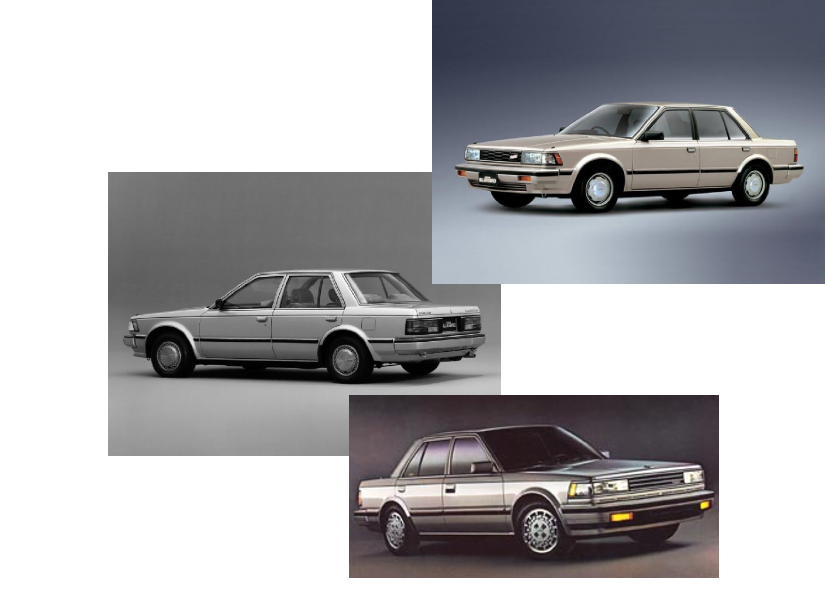
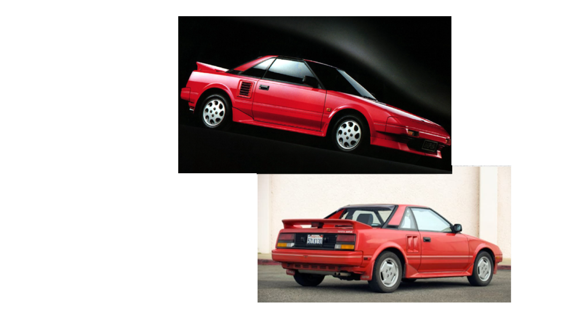

From the birth of compact, fuel-efficient models to the emergence of turbocharged sports cars, the Japanese automotive landscape of the '80s was characterized by an unprecedented wave of creativity and competitiveness. Join us on a nostalgic journey through this dynamic decade, exploring the legendary vehicles that defined an era and left an indelible mark on the global automotive landscape.
The first generation Honda CRX, which was in production from 1983 to 1987, had a notable impact in the automotive world. Derived from the Honda Civic platform of the time, the CRX was designed with an emphasis on improved aerodynamics and a sleek, sporty appearance. Renowned for its exceptional fuel efficiency, the CRX often achieved over 50 miles per gallon, making it a popular choice during the fuel crisis of the 1980s. It came in three main variants: the CRX HF (High Fuel economy), the CRX Si (Sport injected), and the CRX DX (Deluxe), each catering to different consumer preferences.
The Nissan Bluebird U11, manufactured from 1983 to 1985, gained significant recognition across various global markets, including Japan, Europe, and Australia, owing to its reputation for reliability and practicality. Sporting a modern and aerodynamic design, the U11 was engineered to enhance both fuel efficiency and handling stability. With engine options ranging from 1.6 to 2.0 liters, the U11 catered to diverse market demands, accommodating a wide spectrum of consumer preferences.
The first-generation Toyota MR2, produced from 1984 to 1989, was a revolutionary sports car that garnered significant attention during its time. Known for its innovative design and remarkable performance, the MR2 became a hallmark of Toyota's engineering prowess. The car's name, "MR2," stands for "Midship Runabout 2-seater," highlighting its mid-engine layout and two-seat configuration. Equipped with a peppy 1.6-liter inline-four engine, the MR2 delivered a thrilling driving experience, characterized by agile handling and precise steering, which earned it accolades from automotive enthusiasts and critics alike.
